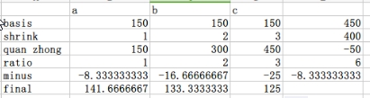
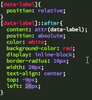

页面布局
calc布局
fixed布局
flex布局
float布局
position布局
flex布局(支持IE10及以上版本，移动端)
display:flex;(给布局的父元素)
flex-basis:120px;(用于子元素，相当于width，当它和width同时出现时，优先级高于width)
flex-grow:1;(用于子元素，用来按比例分割父元素剩余的宽度，注意此时如果子元素有自身的宽度需要flex-basis:0)
flex-shrink:2;(当父元素的空间不够时，子元素该如何收缩和适配父元素的宽度),理解图如下

flex-direction:row-reverse/column/column-reverse(用在父元素上，控制子元素排列方式，反向/上下排列)
order:50/-3;(用于子元素，表示元素排列的顺序，数值越大越靠后，越小越前)
flex-wrap:wrap;(用于父元素。如果flex-direction比作主轴，那么它就是侧轴；侧轴垂直于主轴，元素按主轴方向排列)
推荐网站：flexboxfroggy.com flexbox Playground
字体图标
awesome: http://www.fontawesome.com.cn/faicons/
例子：< i class="fa fa-star fa-spin">< /i >
iconfont
icomoon https://icomoon.io
比较牛的角标例子
html代码：< span data-label="3">消息< /span >
css代码： 
ul>li{内容}*5